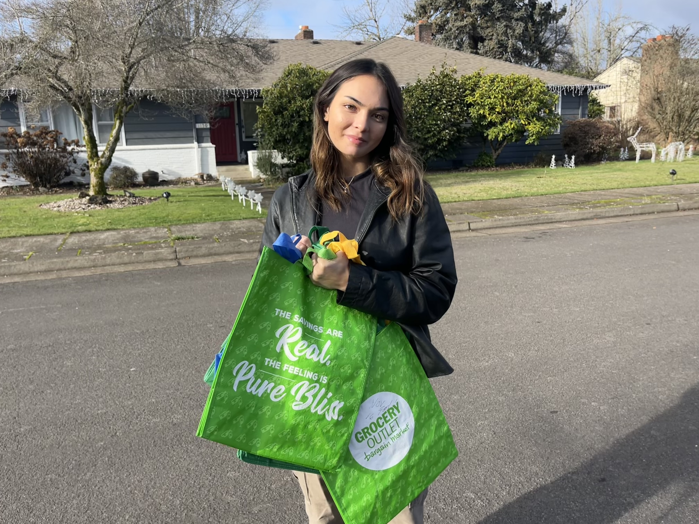
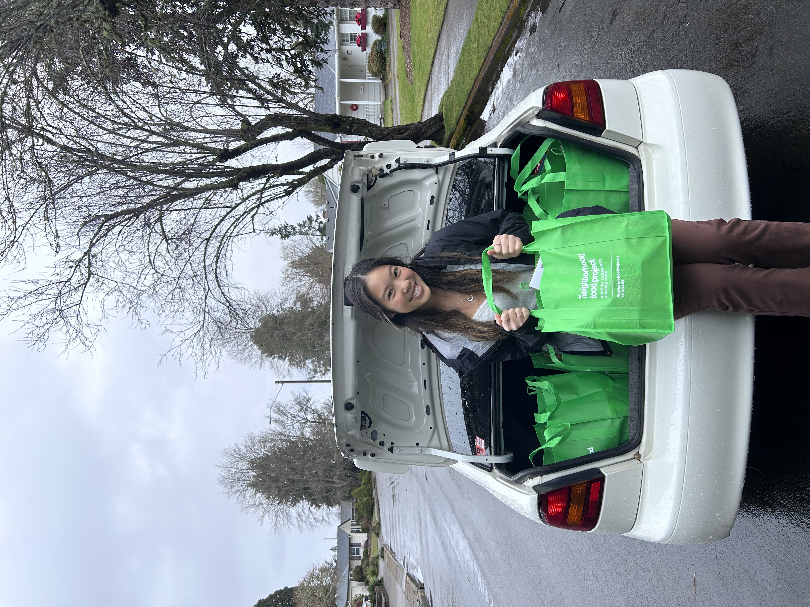

Shahar Miles
CEO & Director
Shahar is a senior Marketing student at Oregon State University. Since founding this project in February of 2022, she continues to share her passion for equitable food resources in the community.
milessha@oregonstate.edu

Camryn Lee
Head of Finance
Camryn is a senior Kinesiology student at OSU. She spearheads fundraising efforts for our club while organizing group meetings for effective material planning.
leecamr@oregonstate.edu

Grace Darzas
Head of Marketing
Grace is a senior Marketing student at OSU. Her literacy in design, even coordination, and social strategy helps bring this project to life.
darazsg@oregonstate.edu